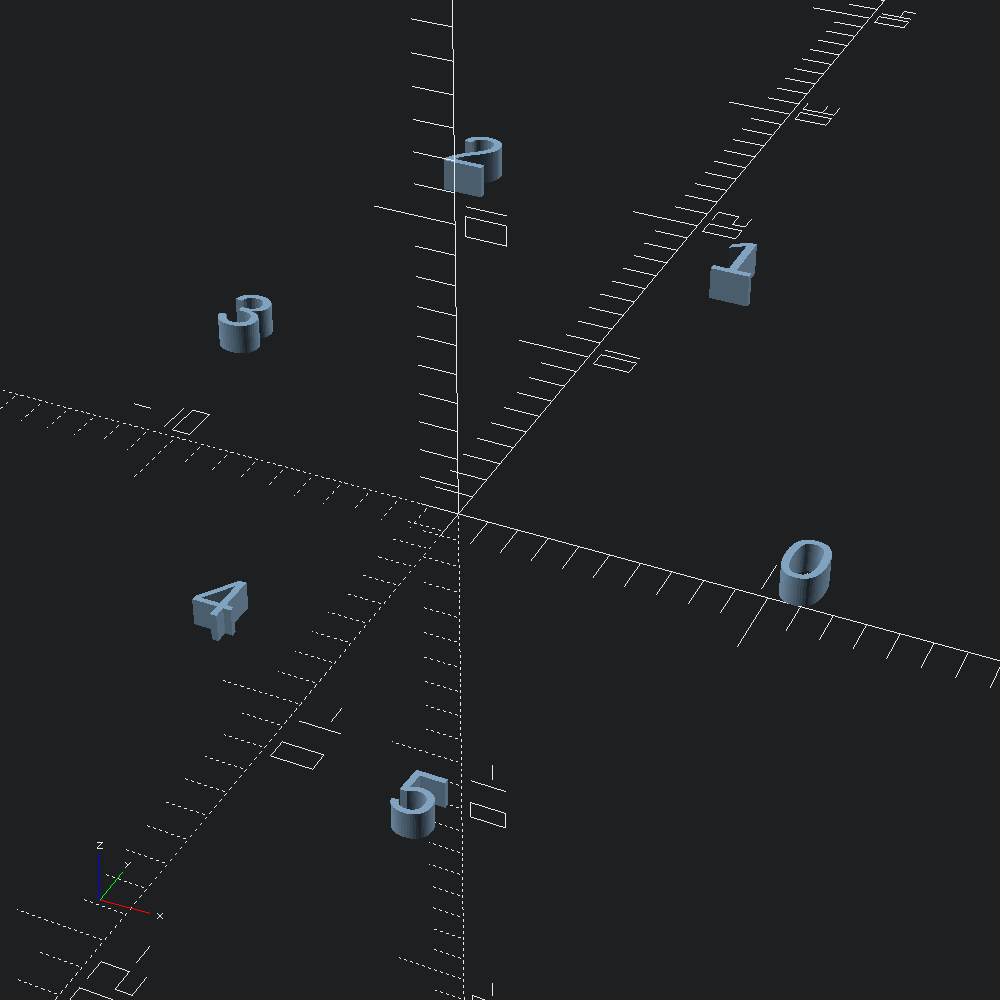

Arcing paths
open Scad_mlA numbered marker function for Path2.show_points and Path3.show_points that we can use to visualize our arcs (and their ordering).
let show i = Scad.linear_extrude ~height:1. (Scad.text ~size:2. (Printf.sprintf "%i" i))Draw an arcing path of fn points on the xy plane through the points describing a triangle.
let () =
let arc = Path2.arc_through ~fn:5 (v2 0. (-10.)) (v2 10. 0.) (v2 0. 10.) in
Scad.to_file "arc_points_2d.scad" (Path2.show_points show arc)

Each of the arc drawing functions takes a wedge parameter that will include the centre point of the arc at the end of the path when true.
let () =
let arc =
Path2.arc_about_centre
~fn:6
~wedge:true
~centre:(v2 0. 10.)
(v2 (-15.) 0.)
(v2 5. (-5.))
in
let wedge = Scad.linear_extrude ~height:1. @@ Path2.to_scad arc
and marks =
Path2.show_points show arc
|> Scad.translate (v3 0. 0. 1.1)
|> Scad.color ~alpha:0.8 Color.Magenta
in
Scad.to_file "arc_wedge_2d.scad" @@ Scad.union [ wedge; marks ]
Arcs can also be drawn onto 3d planes other than xy. Here we define a plane from a normal vector, and draw an arc of pi /. 1.5 around the origin from the angle start onto it.
let () =
let arc =
Path3.arc
~fn:5
~plane:(Plane.of_normal (v3 0. (-0.6) 0.4))
~centre:Vec3.zero
~radius:10.
~start:0.
(Float.pi *. 1.5)
in
Scad.to_file "arc_points_3d.scad" (Path3.show_points show arc)